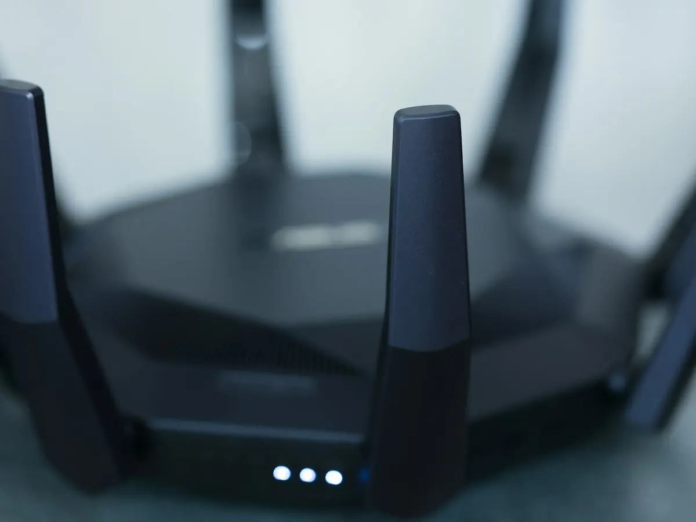
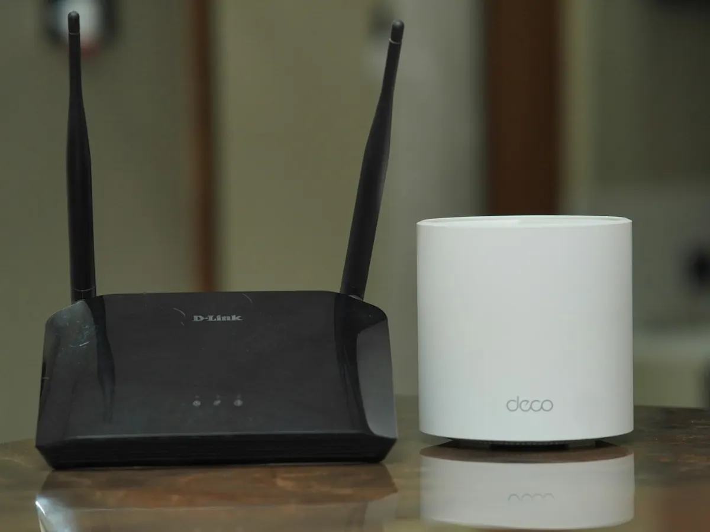

Installation de box internet et Wi-Fi à domicile
Nouvelle box à brancher, Wi-Fi qui ne passe pas dans la chambre, connexion qui coupe en pleine visio ? Nous installons votre box, la configurons et faisons en sorte que le Wi-Fi fonctionne dans toutes les pièces.

Ce que nous installons et réglons
Toutes les box et tous les opérateurs, en appartement comme en villa.
- Installation de box : Orange, SFR, Bouygues Telecom, Free : branchement, configuration du Wi-Fi et du décodeur TV, connexion de vos appareils.
- Wi-Fi dans toutes les pièces : Murs épais, appartement en longueur, villa sur plusieurs niveaux : nous mesurons la couverture et plaçons répéteurs ou bornes Wi-Fi maillées là où il faut.
- Connexion lente ou qui coupe : Nous cherchons la cause : emplacement de la box, interférences, réglages, ou défaut de ligne à signaler à votre opérateur.
- TV et objets connectés : Smart TV, enceintes, caméras, imprimante, thermostat : tout est connecté et fonctionne ensemble.
- Wi-Fi sécurisé : Mot de passe solide, réseau invité pour vos visiteurs, mises à jour de la box : votre réseau n'est pas ouvert à n'importe qui.
- Résidences secondaires et locations : Installation avant votre arrivée, réseau dédié pour vos locataires saisonniers, assistance à distance pendant votre absence.

Répéteur ou Wi-Fi maillé ?
Un répéteur suffit pour une pièce isolée : il capte le signal de la box et le renvoie un peu plus loin. Pour un grand appartement ou une maison sur plusieurs niveaux, un système Wi-Fi maillé est plus adapté : plusieurs bornes forment un seul réseau, et vos appareils passent de l'une à l'autre sans coupure.
Avant de vous conseiller du matériel, nous mesurons la couverture chez vous. Parfois, déplacer la box ou changer un réglage suffit.
- Mesure de la couverture pièce par pièce
- Matériel adapté à votre logement, ni plus ni moins
- Un seul nom de réseau dans toute la maison
Comment se passe l'intervention
Une visite, et vous repartez avec un réseau qui fonctionne partout et une fiche récapitulative.
-
État des lieux
Test du débit, mesure de la couverture Wi-Fi pièce par pièce, repérage des appareils à connecter.
-
Installation et extension
Box placée au meilleur endroit possible, Wi-Fi configuré, décodeur TV, ordinateurs, téléphones et imprimante connectés. Nous vous conseillons le matériel adapté à votre logement (répéteur, Wi-Fi maillé, prise CPL), que nous pouvons fournir et installer.
-
Vérification avec vous
Nous testons dans chaque pièce et vous laissons une fiche avec le nom du réseau, le mot de passe et les manipulations utiles.
À essayer avant de nous appeler
- Débranchez la box 30 secondes puis rebranchez-la
- Sortez la box d'un meuble fermé et éloignez-la du sol et des murs
- Consultez l'état de votre ligne dans votre espace client opérateur
- Testez avec un câble branché sur la box pour savoir si le souci vient du Wi-Fi ou de la ligne
À distance ou à domicile ?
Une installation de box ou une amélioration du Wi-Fi se fait à domicile, en général en une visite. Si du matériel est nécessaire (répéteur, bornes), nous vous conseillons le plus adapté.
- Télé-assistance : idéale pour les problèmes logiciels, sans attente ni déplacement
- Intervention à domicile : pour le matériel, les installations, ou si vous préférez un technicien à vos côtés
- Partout à Nice et dans les Alpes-Maritimes, sur rendez-vous
Box et Wi-Fi : vos questions
Mon opérateur installe déjà la box, pourquoi faire appel à vous ?
Le technicien de l'opérateur se charge du raccordement de la ligne ou de la fibre. Nous intervenons pour tout le reste : couverture Wi-Fi dans toutes les pièces, connexion de vos appareils, imprimante, TV et réglages de sécurité.
Ma connexion est lente, est-ce la box ou la ligne ?
Un test avec un câble branché directement sur la box permet de le savoir : si le débit est bon en câble, c'est le Wi-Fi qu'il faut améliorer. Sinon, nous vous aidons à préparer votre signalement à l'opérateur.
Pouvez-vous préparer le Wi-Fi d'une location saisonnière ?
Oui. Nous configurons un réseau dédié à vos locataires, séparé du vôtre, et pouvons intervenir à distance en cours de saison si besoin.
Autres problèmes fréquents
Imprimante, nouvel ordinateur, smartphone… retrouvez tous nos services sur la page assistance aux particuliers.
Nous intervenons partout sur la Côte d’Azur et à Monaco
Le Wi-Fi vous fait des misères ?
Appelez-nous : nous établissons un premier diagnostic gratuit par téléphone.